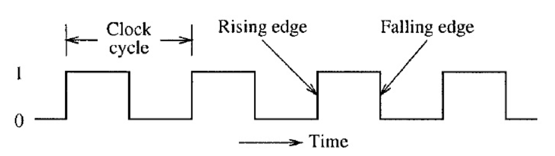
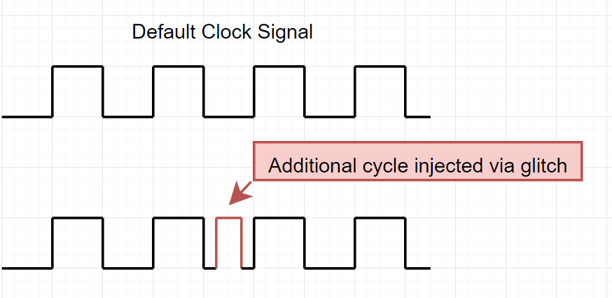
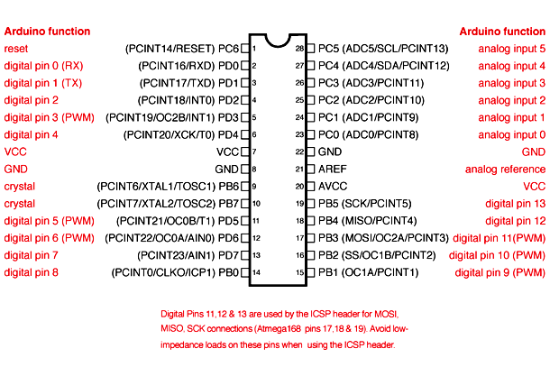
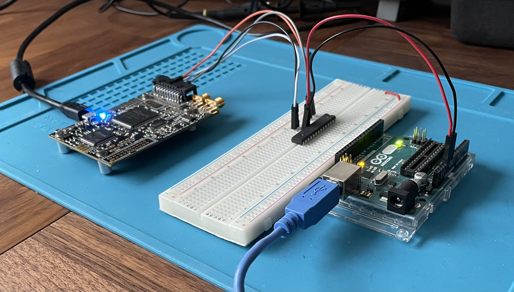
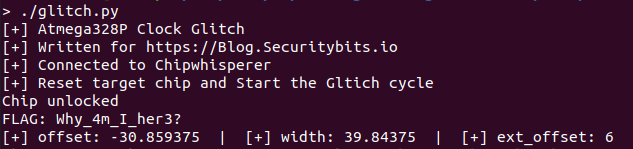

Clock Glitching with a ChipWhisperer-Lite
What happens when things get out of sync?… SCIENCE!
Purchasing a Chipwhisperer-lite and going through the Newae course is a really awesome experience. Though the course teach you alot obout each vulnerability and the Chipwhisperer API, I found it lacking alot in the “how to setup the hardware” department. So finishing up the course material, I’ve decided yet again to attack my favourite platform, the Arduino Uno and implement a bunch of the Riscure CTF challenges and yet again, attack the Fiesta challenge.
What is Clock Glitching
All Microcontrollers are bound by operating out of a clock cycle, where one cycle is defined by a pulse. During the start of each pulse, the microcontroller is executing and fetching a new instruction. The start of a clock cycle is usually defined by a rising edge (binary 1) followed by a falling edge (binary 0), for the duration of a fixed time period. The amount of cycles per second defines the processors clock speed, for example the Atmega328p defaults to a 16MHz Clock speed, which means that it performs 16E6 instructions per second.

As with the Voltage Glitching in the post “Voltage glitching on the Cheap”, we defined that within a given set of parameters the hardware operates normally. But introducing faults into the voltage line corrupted the instructions enough to break out of the “Lock” loop. The same assumption is made with the clock line, that within a given set of parameters the hardware will operate normally.
In order to create the “glitch” for our clock glitch to work, we must introduce an additional clock cycle to the microcontroller. By doing so, we can make the microcontroller to essentially “skip” a step in the execution.

Setup
Components needed:
- Arduino UNO
- Chipwhisperer-Lite (or Pro)
- Breadboard
- DuPont Wires
(And some basic knowledge in Python and the Chipwhisperer API will not hurt)
Again, lets start by loading the source code onto our victim Uno using avrdude:
root@linux:~# wget https://raw.githubusercontent.com/Riscure/Rhme-2016/master/challenges/binaries/fiesta/fiesta.hex
root@linux:~# avrdude -c arduino -p atmega328p -p /dev/<UNO Device> -b115200 -u -V -U flash:w:fiesta.hex
Powering the Uno and connecting with your favourite serial terminal you should expect something like:
root@linux:~# screen /dev/ttyACM1 19200
RHME2 FI level 1.
Chip status: LockLockLockLockLockLockLockLockLockLockLockLockLockLock[...]
Great, lets hook up our Chipwhisperer and get glitching!
Connecting the Chipwhisperer
The premise of the clock glitch, is to provide the clock source (CLK-SRC) from the Chipwhisperer, in order to control the clock pulses. We also want to use the Arduino UNO baseboard in order to power she Atmega328p as the Chipwhisperer-Lite are no able to provide the 5v output required.
Connecting the CW-Lite and Uno according to the scheme below, will ensure that the chip have a stable power connection, as well as the ability to receive a clock input from the CW-Lite.
CW-Lite <> Atmega328p <> [Uno Baseboard]
2 (GND) > 8 (GND) < [GND]
5 (NRST) > 1 (RST)
6 (HS2) > 9 (TOSC1)
12 (IO2) > 3 (TXD)
7 (VCC) < [5v]
According to the following diagram:

Just to go into some further detail before we jump into the code about why we connect the pins the way we do. First of all we would like the CW-Lite and the Atmega328p to share a common 2 GND <> 8 GND, it makes life a bit simpler in this case.
NRST <> RST pins are connected so that we are able to programmtically reset the target, according to the Atmega328p Datasheet if the RST pin is LOW, the device will reset. Which is beneficial to us as we can utilize that in case of the device starts misbehaving in a way we dont want (See function reboot_flush() in the later code). But that also means that the RST pin need to be HIGH in order for the device to operate.
HS2/OUT <> TOSC1 is the actual Clock Source for the Atmega328p which we will manipulate.
The final pins IO2 <> TXD is used to capture the flag and Serial output of the Atmega328p in order to see if we are successful in our attempts to glitch past the LockLockLock message.
Heres a complete picture of the setup:

Glitching Time
So we will be using a Chipwhisperer (If it wasn’t obvious already), the CW-Lite API and Python3 in order to create our Glitch loop. While it might look confusing at first, we’ll go through a couple key points in the code.
Scope Setup
The first thing we’ll do after connecting to the device is to run a scope.default_setup so that we do not have any lingering configurations lying around. We then move on to defining some of the GPIO pins, which is the same as the connection scheme before:
GPIO
- TIO1 > Serial_Tx
- TIO2 > Serial_Rx
- NRST > High (Because otherwise the Arduino will be stuck in reset loop)
- HS2 > Glitch (For the clock output)
Glitch design
The next part is actually defining how the glitch will look like, and where the chipwhisperer is pulling its clock sync from. The parameter clk_src which is set to clkgen tells the CW-Lite that it should provide the target with a clock signal. The parameter clkgen_freq determines what frequency the clock signal should be at. This is something that we can use an oscilloscope or similar to determine, but according to the datasheet the Atmega328p runs at 16MHz or 16E6.
The complete scope setup should look something like:
scope.adc.timeout = 0.1
scope.io.nrst = "high"
scope.io.tio1 = "serial_tx"
scope.io.tio2 = "serial_rx"
scope.io.tio4 = "high_z"
scope.io.hs2 = "glitch"
scope.glitch.clk_src = "clkgen"
scope.glitch.trigger_src = "manual"
scope.glitch.repeat = 1
scope.glitch.output = "clock_xor"
scope.clock.clkgen_freq = 16E6
Glitch Time and Shape
The following lines of code are responsible for the timing of the glitch, and the shape of it.
gc.set_range("width", 40, 40)
gc.set_range("offset", -35, -25)
gc.set_range("ext_offset", 5, 10)
gc.set_global_step(1)
scope.glitch.repeat = 10
These are the settings that worked for me, but your mileage may vary. Recommend tweaking ext_offset and increase the span of offset in order to vary the place of the glitch.
Reset Function
The reboot_flush() function is defined according to the Atmega328p datasheet, where a chip reset occurs when the RST pin is set to low for more than a clock cycle and brought to high_z. The function is nice to have so that each execution of the glitch script works of a fresh slate for the microcontroller. But the function can also be used if the glitch cycle would be corrupting anything in the program memory which is not beneficial to us.
def reboot_flush():
scope.io.nrst = "low"
time.sleep(0.05)
scope.io.nrst = "high_z"
time.sleep(0.05)
target.flush()
return
Creating the glitch
Putting it all together should look something like this:
#!/usr/bin/env python3
import chipwhisperer as cw
import chipwhisperer.common.results.glitch as glitch
import time
import logging
print("[+] Atmega328P Clock Glitch")
print("[+] Written for https://Blog.Securitybits.io")
scope = None
scope = cw.scope()
assert scope != None
print("[+] Connected to Chipwhisperer")
scope.default_setup()
scope.adc.timeout = 0.1
scope.io.nrst = "high" # Pin 1 on DUT
scope.io.tio1 = "serial_tx"
scope.io.tio2 = "serial_rx" # Pin 3 on DUT
scope.io.tio4 = "high_z"
scope.io.hs2 = "glitch" # Pin 9 on DUT
scope.glitch.clk_src = "clkgen"
scope.glitch.trigger_src = "manual"
scope.glitch.repeat = 1
scope.glitch.output = "clock_xor"
scope.clock.clkgen_freq = 16E6 # 16MHz Clock Signal
target = cw.target(scope) # Serial Rx Setup to communicate with target
target.baud = 19200
gc = glitch.GlitchController(
groups = ["success", "reset", "normal"],
parameters = ["width", "offset", "ext_offset"]
)
# Parameters to set the timing of the glitch
gc.set_range("width", 40, 40)
gc.set_range("offset", -35, -25)
gc.set_range("ext_offset", 5, 10)
gc.set_global_step(1)
scope.glitch.repeat = 10
# Reset function for the DUT
def reboot_flush():
scope.io.nrst = "low"
time.sleep(0.05)
scope.io.nrst = "high_z"
time.sleep(0.05)
target.flush()
return
cw.glitch_logger.setLevel(logging.ERROR)
print("[+] Reset target chip and Start the Glitch cycle")
reboot_flush()
for glitch_setting in gc.glitch_values():
scope.glitch.width = glitch_setting[0]
scope.glitch.offset = glitch_setting[1]
scope.glitch.ext_offset = glitch_setting[2]
target.flush()
scope.arm()
scope.glitch.manualTrigger()
val = target.read(128)
if 'Chip unlocked' in val:
print(val)
print('[+] offset: {} | [+] width: {} | [+] ext_offset: {}'.format(
scope.glitch.offset,
scope.glitch.width,
scope.glitch.ext_offset))
break
Full script is avalible at: Github Link
If everything is set up properly, running the code will eventually result in:

sys.exit()
I hope that you enjoyed reading some of this or that it at least was a bit useful, i can recommend that if you’d like to dive deeper into glitching to purchase a chipwhisperer at your Newae Mouser Store as the free course dives really deep into the glitch.
And here are some cool links:
- Replicant Trezor Wallet: https://voidstarsec.com/blog/replicant-part-1
- Chipwhisperer Docs: https://chipwhisperer.readthedocs.io/en/latest/
- Intro to Clock glitching: Long Link to Github
(Stay tuned, might actually do this on the cheap with a Raspberry Pico as well…)